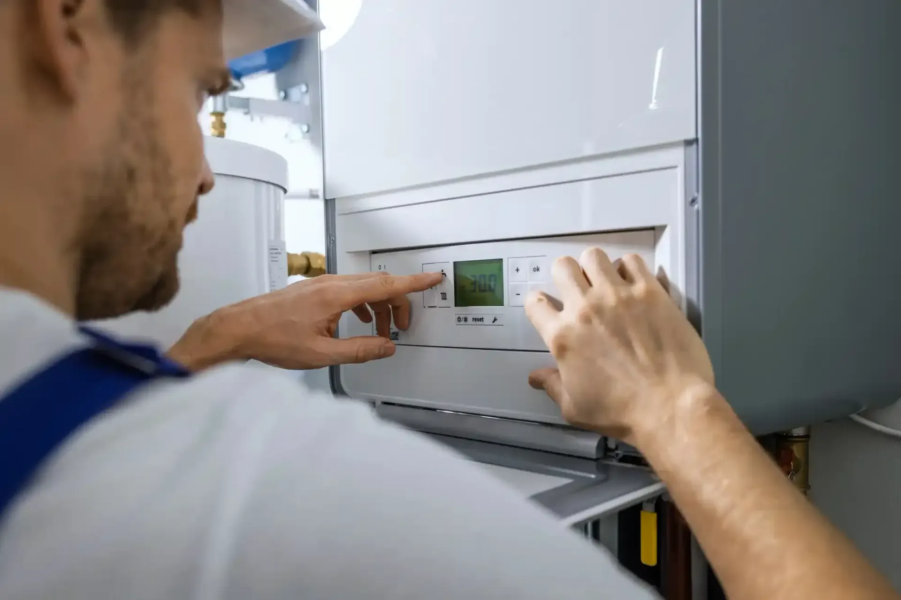
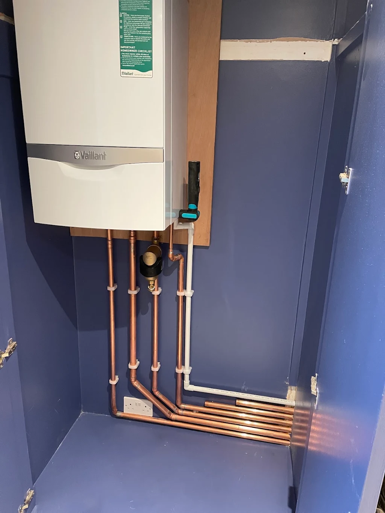
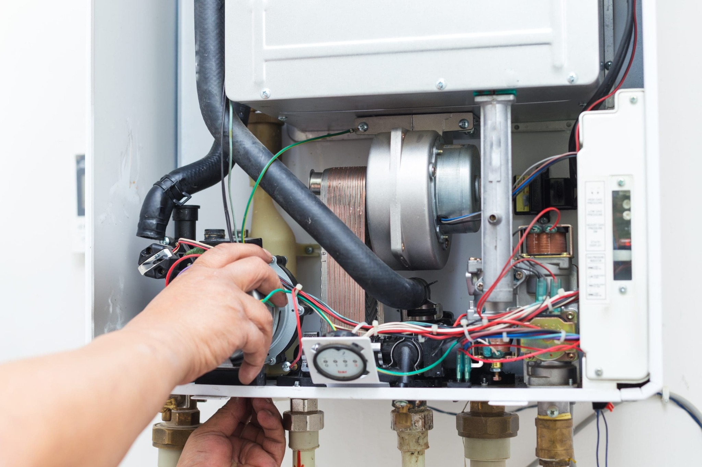
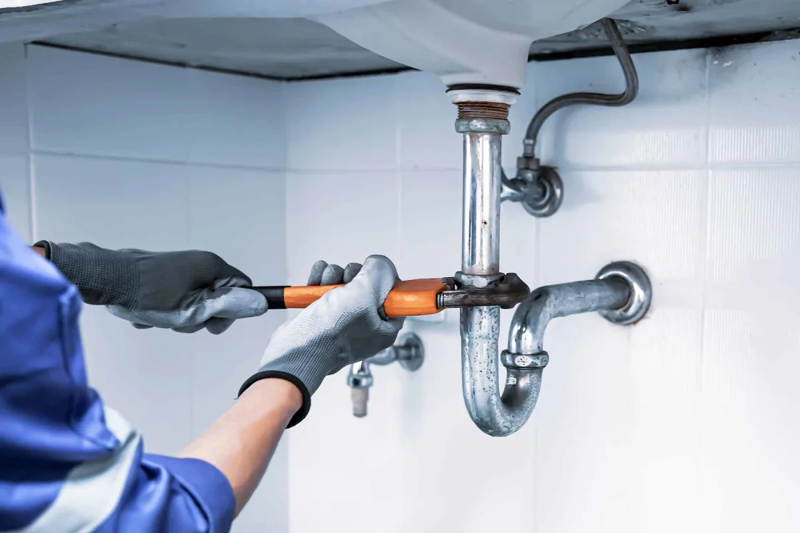
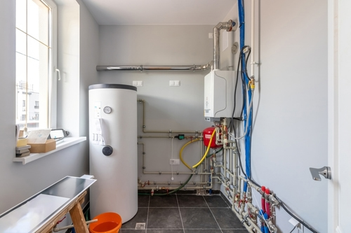
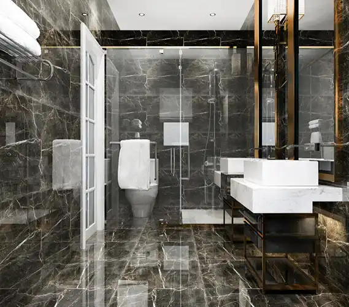

MULTISERVICES / MERATE · LC
Acqua, calore.
La tua casa,
in buone mani.
Installazione caldaie, servizi idraulici e assistenza agli impianti elettrici a Merate (LC). Un contatto diretto per il tuo intervento.

01 / COSA FACCIAMO
Ogni impianto.
La giusta attenzione.
Dal piccolo intervento alla nuova installazione. Scegli il servizio e scopri come possiamo aiutarti.

Installazione caldaie
Un nuovo impianto, a partire dalle tue esigenze.
Scopri il servizio
Manutenzione e assistenza caldaie
Controlli e assistenza per la tua caldaia.
Scopri il servizio
Riparazioni e servizi idraulici
Dai rubinetti ai sanitari, cura per ogni dettaglio.
Scopri il servizio
Manutenzione impianti idraulici
Assistenza per acqua, tubazioni e collegamenti.
Scopri il servizio
Assistenza impianti elettrici
Manutenzione e assistenza per i tuoi impianti.
Scopri il servizio02 / MULTISERVICES
Una casa funziona
quando tutto
è collegato.

Idraulica, caldaie e impianti elettrici: esigenze diverse, un unico contatto.
Multiservices di De Lucia Roberto si occupa di installazione caldaie, manutenzione e assistenza su impianti elettrici e idraulici a Merate.
Descrivi il lavoro di cui hai bisogno: valuteremo insieme le esigenze e i prossimi passi.
Contatta MultiservicesIL TUO PROSSIMO PASSO
Raccontaci cosa serve.
Chiama o scrivi, indicando il problema e la località.
Valutiamo il lavoro.
Condividi i dettagli utili per definire l’intervento.
Concordiamo i dettagli.
Verifichiamo disponibilità, modalità e costi.
03 / VICINI AL TUO IMPIANTO
Il nostro punto
di partenza?
Merate.
Hai bisogno di un intervento in zona?
La sede è in Via Oreste Bonfanti 7/E, Merate (LC). Per richieste fuori Merate, comunicaci il comune e il servizio necessario: verificheremo la copertura.
Verifica la tua zonaIndirizzo della sede · Eventuali incontri da concordare.
QUALCHE RISPOSTA UTILE
Prima di
chiamarci.
Come posso richiedere un intervento?
Telefona o scrivi un’email indicando il servizio richiesto, l’indirizzo dell’intervento e una breve descrizione del problema.
Quali informazioni servono per una caldaia?
Comunica marca e modello, se disponibili, e l’eventuale codice di errore. Per una nuova installazione, specifica se devi sostituire una caldaia esistente.
Operate anche fuori Merate?
Per un intervento fuori Merate, contattaci indicando il comune e il tipo di lavoro: verificheremo la copertura della zona.
Come vengono concordati costi e appuntamenti?
Contattaci per valutare le esigenze, verificare la disponibilità e concordare modalità e costi del lavoro.
Dove siamo
- INDIRIZZO
- Via Oreste Bonfanti 7/E, Merate (LC)
- TELEFONO
- +39 071 960 6446